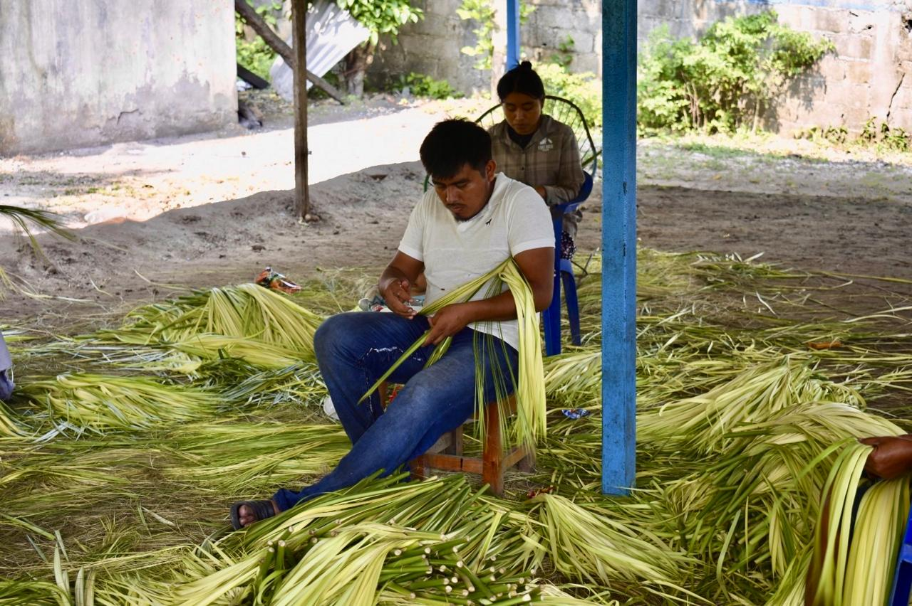

Somos artesanos apasionados por preservar el arte del sombrero de paja jipijapa, una tradición que llevamos con orgullo a cada rincón de México.
Jipijapa Ancestral nació del amor profundo por el arte textil de nuestros ancestros. Nos inspiramos en la técnica tradicional del tejido de paja toquilla para crear sombreros que son mucho más que accesorios: son obras de arte portables.
Cada sombrero que sale de nuestras manos lleva horas de trabajo meticuloso, fibras seleccionadas con cuidado y el alma de artesanos que han perfeccionado su oficio a lo largo de años. No producimos en masa: producimos con propósito.
Hoy llevamos esa tradición desde Tenosique, Tabasco, a todo México, orgullosos de que cada cliente que elige un sombrero Jipijapa Ancestral elige también una historia, una cultura y un compromiso con la autenticidad.

Maestro artesano — Tradición viva
Cada pieza es elaborada a mano por maestros artesanos. No existen dos sombreros iguales: la pequeña variación es la firma del artesano.
Usamos exclusivamente paja jipijapa de origen natural, seleccionada por su finura, resistencia y color.
Somos guardianes de una tradición que pasa de generación en generación. Cada sombrero es un acto de preservación cultural.
Cada sombrero pasa por un riguroso control de calidad antes de llegar a tus manos.
Te asesoramos para encontrar el sombrero perfecto para tu estilo, talla y ocasión.
Elegimos cada hebra de paja jipijapa por su finura, color uniforme y resistencia.
Se teje con la técnica tradicional; puede tomar desde horas hasta días según el modelo.
Se forma, bloquea y trata para darle estructura, resistencia y su acabado elegante.
Revisamos cada detalle antes de empacar.